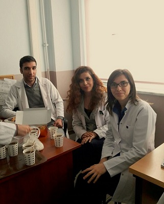

Hakkında Merak edilen her şey
Bilişim Bölümü Nedir!
Bilişim Bölümü?
Bilişim bölümü Türkiye’de meslek liselerinde bulunan bilgisayar ile ilgili eğitim veren bir bölümdür. Bu bölümü seçerken öğrencinin beklentileri çok önemlidir çünkü; bölümü seçenlerin %90’ı hayal kırıklığı içinde kalmakta ve beklediğini bulamamaktadır. Öncelikle bilinmelidir ki; bilişim bölümü ortaokulda ki bilgisayar laboratuvarı derslerinize benzer dersler vermeyecek, her ders bilgisayar başında olacağız, rahat olacağız, nasıl açılır, nasıl kapanır, içindeki donanımlar nasıl sökülür, nasıl çıkartılır, format nasıl atılır öğrenip sınıf geçeceğiz diye bir beklentiniz varsa çok yanılıyorsunuz. Bilişim bölümüne girdiğiniz zaman sizi bekleyen, şuana kadar çoğunuzun duymadığı bir konu var. Bu konu “programlama” meslek liseleri aslında bir bilgisayarcıdan çok yazılımcı geliştirmeyi amaçlıyor. Bu yüzden ilk bölüm senesinden itibaren değişik dillerden başlayarak öğrencilere programlama ve algoritma öğretiyorlar. Eğer bir meslek lisesine gidiyorsanız ve bilişim bölümüne girmek istiyorsanız size tavsiyem önceden bilgisayara ilginiz olsun ama bu oyun oynamak, sosyal ağlarda takılmak gibi bir ilgi değil. Programlama konusunda bir ilginiz olsun ve birşeyler öğrenmeye çalışın. Günümüzde bu konularda kaynak sağlayan birçok site bulunmakta ve hepside kaliteli, güncel kaynaklar. Okula başlamadan programlama konusunda bir şeyler öğrenmek sizi ileriye götürecektir ve zaten bu işi yapmak istiyorsanız buna alışmanız gerekir. Gerçekçi olmak gerekirse okullar öğretemiyor. Bir öğrenciye algoritmadan bahsediyorlar ilk başta ama verdikleri örnekler tam bir fiyasko hoca tahtada hatalarını göstermesine rağmen öğrenci algoritmayı düzeltip gelemiyorsa bu olayın farkına varamamışlar demektir. Yanlış bölümü seçmişler hatalılar demektir. Bu ilk 4 hafta olur anlarım ama bir öğrenci dönemin diğer yarısına geçilmesine rağmen algoritma üretmede sıkıntı yaşıyor hatta algoritmanın programlamada nasıl kullanıldığını bilmiyorsa her konuda sıkıntı yaşayacak ve ileride bu meslekte güzel şeyler yaşamayacak demektir. Bu konuda eğitim sisteminin de hataları var. İnsana günlük hayatta devamlı kullandığı birşeyi (mantık) kağıda dökmesini (algoritma) öğretemiyorlarsa burada hatalı eğitim söz konusudur. Bu yüzden devamlı okuldan birşeyler beklemek yerine kendinizi kendiniz geliştirmeniz gerekecek. Bilişim bölümü diğer bölümlere benzemez, teknoloji ile ilgili bir bölümdür ve teknoloji gün be gün ilerledikçe öğrendiğiniz veya size okulda öğretmeye çalıştıkları diller her gün yenileniyor, her gün yeni birşeyler ekleniyor. Bunu bu konuyla ilgili daha önceden bilgisi olanlar için anlatmak gerekirse PHP’nin 5.0’dan önceki haliyle 5.0’dan sonraki halini karşılaştırın durum ortadadır. Şimdi firmalar tercih yaparken kendini yenileyebilen, dilin yeni çıkan kurallarını öğrenebilen elemanları seçerler. Ülkemizde “Bilgisayar Mühendisleri İşsiz” diye gazete başlıkları, Tv haberleri yapıldı. Bu benim çok sinirlendiğim bir konudur. Bilmelisiniz ki ülkemizde bilgisayar mühendisleri işsiz değil. Fakülteden mezun olup kendini bilgisayar mühendisi sananlar işsiz. Adamlar bilgisayar mühendisliğinden mezun olmak için gereken basit bir php ödevini bile forumlarda para ile yaptırmaya çalışıyorlar. Yaptırıyorlar sonra diplomayı alıp bir şirkete çalışmaya gidiyorlar. Sonra bir iki hafta içinde kapı önündeler. Ne oldu? Bilgisayar mühendisleri işsiz. Demek ki bilgisayar mühendisi olamamışsın olsan iş çok. Anlayacağınız bu alan kendini geliştirmesini bilenlere, bilgisayara ve bilgisayarın arka yapısına aşırı derecede ilgi duyanlara, sabırlılara, sıkılmayacak kendini zorlayabilecek kişilere özeldir. Diğerleri bu alanı bitirir, mezun olurlar, diplomaları alırlar. Sonrada bir haber çıkar; “bilişim mezunları işsiz” :) ama bu haber kolay kolay çıkmaz çünkü; değerli hocamız Ahmet Ö.’nün dediğine göre mezunların çoğu kariyerini kasiyerlik, manavlık yaparak ilerletiyorlarmış. Burada manavlıkta kötü değil, kasiyerlikte yanlış anlaşılmasın amaç bu değil. Ama bu bölümü okuyup, mezun olup çıktıysan ve yapacağın iş manavlıksa, kasiyerlikse 4 yılın boşa gitmiş demektir. Ben bu şartları taşıyorum, programlamaya baktım zevk aldım, anlayabiliyorum. Sabırlıyım, azimliyim, bir konuya kafayı takarsam çözene kadar bırakmam, internette yabancı dillerde çıksa bile programlamaya dair yenilikleri rahatlıkla takip edebilirim diyorsanız bilişim bölümü sizin içindir diyebiliriz.
Veritabanı Programcılığı mı? Web Programlama mı?
Veritabanı Programcılığı mı? Web Programlama mı ? Bir diğer sıkıntılı konumuzda dal seçimidir. Bu seçimde bir sene bitmiştir bilişime dair temel konular ve bir adet programlama diliyle programlamanın temelleri atılmaya çalışılmış, öğrencilerin algoritma üretme kapasitesi geliştirilmeye çalışılmıştır. Sıra gelmiştir gerçek derslere, ileri konulara bu sırada ikinci seneye geçmiş oluyorsunuz ve size bir form dağıtıp veritabanı programlama veya web programlamayı seçmenizi istiyorlar. O sırada sivri zekalı üst sınıflardan ilginç fikirler gelecektir. Sorulacaktır gidilip hangisini seçmeliyiz diye. Bölümü seçenlerin %90’ı pişman ve hayal kırıklığı içinde demiştik her iki bölümde de okuyan birileri bulunur sorulur fakat bunlar genellikle %90’a dek gelir ve size derler ki; -Web Programlama da okuyan üst sınıf öğrencisi: “Ya web programlama çok zor, çok sıkıntılı keşke veritabanı seçseydik diyoruz biz sen kesin veritabanı seç” -Veritabanı programlama da okuyan üst sınıf öğrencisi: “Ya veritabanı programlama çok zor, çok sıkıntılı keşke web programlama seçseydik diyoruz biz sen kesin web programlama seç” Bunun sonucunda herkesin kafası karışır :) Hangisi daha kolay, hangisi daha zor polemikleri çıkar ortaya ve önünü kesemezsiniz. Arkadaşlar bilmelisiniz ki ikisi de kolay olmayacak. Bu alana kolay diye geldiyseniz baştan kaybettiniz. Programlama demek bir virgül hatası yüzünden yüzlerce satırı günlerce uykusuz tarayıp bulamayıp, bir gün kalktığınızda şurada hata yapmışım deyip o virgül eksiğini görmektir. Böyle sabır isteyen bir iş için bir alan seçip, kolayı beklemeniz gerçekten çok saçmadır. Bu kişiler dediğimiz %90’lık kesime denk gelip, bilişimden başka şeyler bekleyerek hiçbir fikri olmadan girenlerdir. Bu arkadaşlara kulak asmayın siz :) Peki, bunlara kulak asmayacağız neye göre seçeceğiz dalımızı diyorsanız: dal seçiminde dikkate almanız gereken tek nokta şudur ki; siz bilgisayarlarda çalışacak programlar mı yapmak istiyorsunuz yoksa internette çalışacak olan web siteleri mi yapmak istiyorsunuz? Hangisi öğrenmek istiyorsunuz? Bu noktada bir karar verip seçmeniz gerekiyor. Yayılan bir diğer sık haber ise web’in daha kolay olduğu çünkü; grafik, tasarım, görsel ağırlıklı olduğudur. Bu konu açıldığında gülmekten gözlerim yaşardığı da olmuştur :) Vay be demiştim ben okuldan önce kaç yıl uğraştım web ile ama görüyor musun, grafik ağırlıklıymış benim hiç haberim yok :) boşa uğraşmışım demek ki demiştim. Bilmeniz gerekiyor ki; öyle birşey yok. Grafik ile uğraşacağınız doğrudur, tasarım yapacaksınız ama bu tasarımı koda dökecek olan sizsiniz, koda döktükten sonra kullanabilmek için php veya asp.net ile “PROGRAMLAMASINI” yapacak olan yine sizsiniz. Yani bu dalda da kod yazılıyor. Bunu aklınızdan çıkarmayın. İki dalda da kod yazacaksınız. Bu bölüm kod yazmayı gerektiriyor zaten siz bilgisayar tamiriyle uğraşmak istiyorsanız hiç zamanınızı kaybetmeyin bir bilgisayarcının yanına çırak olarak girin. Bunu söylerken aşağılama amacı gütmüyorum samimiyim. Bu okulda harcayacağınız boşa 4 yılınız yerine gidin onu bir bilgisayarcının yanında harcayın daha çok şey öğrenir, yıllarınızı iyi kullanmış olursunuz. İnsanın istediği şeyi yapması önemlidir. Sizi sınav sisteminin puanları, ailenizin bilişimde çok para var bak şu akrabanın çocuğu şöyle şöyle demesi vs. bilişim alanına sürüklemesin. Bu mantıkla gelenlerin hepsi işsiz bilgisayar mühendisleridir :) Bilişime gelirseniz yazılımcı olarak çıkmalısınız ve okulun öğrettikleri hep temel olarak kalacak siz üstüne bu piyasada tutunabilmek için birçok şey koymalısınız. Bu o kadar zor değil ama herkesinde yapabileceği birşey değil, her bünyeye uygun değil. Önce ne yapmak istediğinize karar verin, hayatınızı nasıl geçirmek istediğinize ondan sonra bu alanın size göre olup olmadığını belirlersiniz. Son konu webte daha çok para var, veritabanı programlama da daha çok para var konusudur. Arkadaşlar bu konuda tek şey söyleyeceğim siz anlayın artık. İkisinde de para var, peki siz bu parayı hak edebilecek kadar programlama biliyor musunuz ? :) Bu dal seçim konusu gerçekten meslek liselerinde çok büyük sıkıntı ve saçmalayanların bini bin para bu konuda aklınıza takılan soruları burada sorabilirsiniz. Unutmayın okul size sadece temel öğretiyor, çıktığınızda kendinizin öğrenmesi gereken bir çok şey var eğer bu işi yapmak istiyorsanız. Hazır konuya gelmişken eğer bu işi yapmak istemiyorsanız, bu bölümü seçmeyin, bilişim konusunda önceden bilgisi, birikimi olan ama bu bölüme giremeyen birisi sizin yüzünüzden giremiyor ve o yazılımcı olmak istiyor bu şekilde tanıdığım çok arkadaşım var. Adam bilişim konusunda kendini aşmış durumda ama sınav sistemi ve bu yazılımcı olmak istemeyip, ne istediğini bilmeyen, rastgele alan seçen, okuldan çıkınca başka birşey olmak isteyenlerin yüzünden Elektrik elektronik bölümü okuyor. Bu ülkemize zarar verir. Başka insanların hayatının akışına kötü yön vermenizi sağlar. Eğer yazılımcı olmak istiyorsanız, hayalinizdeki meslek buysa, ben bunu istiyorum diyorsanız gelin. Ben bu öylesine olsun, bir kenarda diploma bulunsun Polis olacağım, avukat olacağım, pskolog olacağım, cerrah olacağım diye geliyorsanız. Yazılımcı olmak isteyenlerin önünü tıkıyorsunuz. Cerrahın, pskologun, polisin, avukatın, savcının hiçbirisinin işine yaramayacak burada öğrendikleriniz. Sadece yazılımcı olanların işine yarayacak. Bazı sivri zekalılar diyor ki; işte avukat oldum mesela boş zamanlarımda freelance çalışır site, program yazarım ek para olur. :) Yok öyle bir dünya, sen okuldan çıkıp avukat olana kadar bu teknoloji yerinde saymayacak ve senin öğrendiklerin daima yenileniyor, sen iş yapmaya başladığında firmaların istediği kriterleri asla taşıyamayacak ve bir yazılımcı olarak hayata geçemeyeceksin. Hatta bir süre sonra sen o dil ile hiçbirşey yapamaz duruma geleceksin.